LightWave は３次元ＣＧ作成用のソフトウェアです。 業務用に使用されている３次元ＣＧソフトウェアとしては、 Alias | Wavefront の PowerAnimater や Maya、 Avid の Softimage、 オートデスクの 3D Studio MAX などが有名ですが、 LightWave は低価格ながらそれらに比肩する機能を持つものとして、 テレビや映画のＣＧシーンやゲームの映像作成などに使われています。
しかし、その分非常にたくさんの機能を持っているので、 この Web ページでその機能のすべてを網羅することは不可能です。 また、１コマや２コマの授業でマスターできるような簡単なものでもありません。 この授業のほかのところと同様、 ここではその取っ掛かりの部分だけを提供します。 これを使ってみようと思う人は、 演習室にマニュアルを備え付けてあるので、 自分で勉強してください。 当たり前ですが、 マニュアルは持って帰らないでください。 LightWave の最新情報が知りたければ、販売代理店の ディストーム のページを見てください。
このソフトウェアは、 もともと Amiga というコンピュータ用に開発されたもので、 そこせいか操作方法が Windows や Macintosh、 もちろんみなさんが使っている SGI のコンピュータとも異なる、 ちょっと癖のあるものになっています。
ここのコンピュータに入っている LightWave のバージョンは 5.6 です。
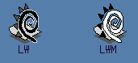
LightWave は LWM と LW の２つのプログラムから成り立っています。 LWM は立体形状の作成（モデリング）を行います。 LW は LWM で作成した形状データ（オブジェクト）を読み込んで３次元空間中に配置し、 それに色やテクスチャを与え、 光源やカメラを設定して目的の画像を生成します。 アニメーションの設定もこのプログラムで行います。 この作業はレイアウトと言います。３次元ＣＧの作成は、以下の手順で行います。
一般にはレイアウトもモデリングの中に含まると考えられますが、 LightWave ではこれらを独立したソフトウェアで行うので、 ここではわけて考えます。
レンダリングは、コンピュータがひたすら計算しているだけなので、 この段階に人間が関わらなければならないことは少ないでしょう。 しかし、３次元ＣＧアニメーションを作成するときは、 何千、何万という画像を生成する必要があるので （１秒間に３０枚使うとすると５分のアニメーションで９０００枚）、 ここにもかなりの時間を見積もっておく必要があります。 なお、LightWave には“スクリーマネット”という 分散レンダリング機能 （複数のコンピュータで同時にレンダリングする機能）があります。 ６階の演習室では 75 台の O2 すべてで LightWave が使えるので、 複数のマシンを使ってレンダリングすればかなり時間を短縮できます （が、そういうことをすると授業に支障が出るので、 夜中とか休日などあまりほかの人が使わないときにやってください）。
もちろん、作品として３次元ＣＧを製作する場合は、 これより以前に企画や脚本、絵コンテやストーリーボードの作成など、 準備段階にそれなりの時間を割く必要があります。 またレンダリングしたシーンをつなぎ合わせ、 音声やビデオ効果を加えて完成したパッケージにする作業も必要になります。 その辺りについてはここでは触れませんが、 デザイン情報演習III における作品作りを通して体験できるんじゃないかと思います。
LightWave を使う前に、 コンソールか UNIX シェルで SETUPLW というコマンドを実行してください。 これは、はじめて LightWave を使うときに、 一度だけ行ってください。 次回からは行う必要はありません。
% SETUPLW[Enter] |
そのあと一旦ログアウトして、 再びログインしてください。
LightWave のモデラ (LWM) は、ほかのＣＧソフトを使っていても、 モデリングにはこれを使う人がいるほど、人気のあるものです。 Showcase の 3D ギズモが「部品」のレイアウトで形を作っていくのに対して、 lwm は「頂点」とか「面」といった、 より細かい単位でものの形を作っていきます。 そのため、非常に凝った形が作れる反面、 思った通りの形を作るためには、 それなりの手間とヒマが必要になります。 しかし、「こねこねこねこね……」と時間さえかければ、 そのうち結構おもしろい形が作れるようになります。
それでは、アイコンカタログの Applications のタブから、 LWM を起動してください。コンソールか UNIX シェルから LWM というコマンドを実行しても構いません。
| LWM が体験版で起動したとき |
|---|
|
O2 の起動直後に LWM を起動すると、 体験版になってせっかく作成したデータが保存できず、 悲しい思いをすることがあります。 
体験版になってしまったときには上のような警告のウィンドウが現われますから、 一旦 LWM を終了して、 しばらく（２～５分くらい？）待ってからもう一度 LWM を起動してください。 LightWave は起動時にその使用権を獲得しようとするのですが、 O2 の起動直後だと LightWave の使用権の管理をしているプログラム（ライセンスサーバ） の起動が間に合わず、 使用権の獲得に失敗してこういうことが起こるようです。 |
LWM によるモデリングは、三面図をもとに行います。 すなわち、物体の正面から見た形、上から見た形、横から見た形を描くことで、 立体形状の定義（作成)を行います。 投影図はプレビュー用であり、 作成した形状をくるくる回していろんな方向から眺めることができますが、 この図を使って形状を修正することはできません。
それでは、まず直方体を作ってみましょう。 上の“オブジェクト”のタブをクリックして、 左の“ボックス”のボタンをクリックしてください。

次に、正面図のところでマウスをドラッグしてみてください。 四角い枠が描かれると思います。 この枠は何度でも描き直すことができますので、 うまく形ができるまでいろいろ試してください。

このままだと直方体に厚みがありませんから、 上面図か側面図で、同様にマウスをドラッグします。

思った通り形が作れたら、“作成”のボタンをクリックするか、 キーボードの [Enter] をタイプしてください。

“アンドゥ”のボタンや u のキーを使えば、 それまでにやった作業を取り消して前の状態に戻すことができます。 “リドゥ”のボタンは「やりなおし」（取消しの取り消し）です。
これらの他にも、いくつかキーボードショートカット （マウス操作の、キーボード操作による置き換え）が用意されています。 たいていのショートカットは、ボタンに書かれていると思います。
| ←↓↑→ （矢印キー） |
ウィンドウに表示する領域を移動します。 |
| ,（コンマ） | ウィンドウに表示する領域を拡大します。 |
| .（ピリオド） | ウィンドウに表示する領域を縮小します。 |
次に、円柱を作成してみます。 左のディスクのボタンをクリックしてください。

最初に円柱の断面形状を決定します。 縦の円柱を作るので、上面図に断面を描きます。 直方体の場合と同様にして大きさを決定します。 描いた図形の中心をドラッグすれば、 図形を平行移動できます。

次に、正面図で円柱の長さを指定します。

“作成”ボタンをクリックするか [Enter] をタイプして、形状を決定します。

次に、作成した形状の色を指定します。 “ポリゴン（多角形）”のタブを選んで、 下の“ボリューム”のボタンを１・２度クリックして、 ボタンの表示を“含む”にしてください。
そのあと、正面図でマウスをドラッグして、 枠が図形を囲うようにしてください。

側面図や上面図でも、枠が図形を囲うようにしてください。

左の“色・質感”のボタンをクリックしてください。

“表面の色・質感設定”というダイアログウィンドウが現われます。 Surface 名として最初から入っている Default を Body に書き換えます。 これはこれから定義する色や質感のデータに付ける名前です。 ここでは作成する形状の本体部分だということで Body としましたが、 分かりやすいものを適当に考えて決めてくださって結構です。
そのあと、"Pick Color" のボタンをクリックしてください。 "Color" というダイアログウィンドウが現われますから、 スライダを左右に動かして、色を決めてください。 そのあと "OK" のボタンをクリックしてください。

| Diffuse | 拡散反射率。 物体に当った光のうち、Color に指定した色成分の光が反射する割合で、 これが大きいほど明るくなる。 |
| Specular | 鏡面反射率。 物体に当った光のうち、光源の色がそのまま反射する割合で、 いわゆる「ハイライト」の部分になる。 |
| Glossiness | ハイライトの広がり。 この値が大きいほど、ハイライトが絞られて鋭くなる。 |
| Double-sided | チェックすると、 この Surface 名が割り当てられた多角形を“両面ポリゴン”として扱う。 立方体や球のように閉じた図形だと、 視点に対して「裏側を向いている」ポリゴンは他のポリゴンに隠されて見えないため、 効率を上げるためにこのようなポリゴンは元から描かれない。 しかし開いた図形の場合は、 ポリゴンが視点に対して裏を向いているときに見えなくなってしまうため、 両面ポリゴンにして強制的に表示させる。 |
| Smooth | チェックすると、 スムーズシェーディングが行われる。 LightWave では物体は「多面体近似」で表現されるが、 そのままだとポリゴンの境界が目立ってなめらかな曲面が表示できない。 ここにチェックを入れておくと、 隣接するポリゴンのなす角が次の "Smoothing Angle" より小さいときに、 ポリゴンの境界を目立たなくすることができる。 |
"Apply" ボタンをクリックすると、 現在選択されている物体（ポリゴン）に、その Surface が適用されます。
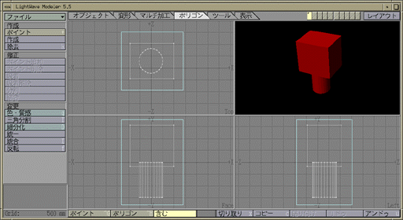
次は文字を入れてみましょう。 上の“オブジェクト”のタブをクリックして、 左の“英文字”のボタンをクリックし、 そのあと“数値入力”ボタンをクリックしてください。
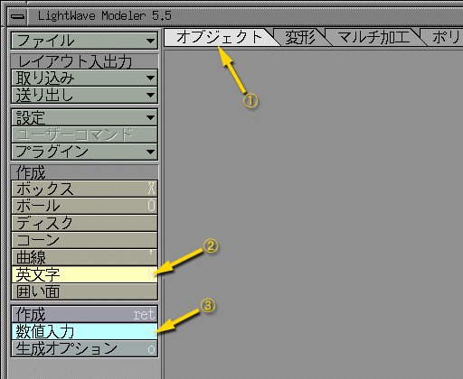
“英文字”のダイアログウィンドウが現われます。 "Text" に作成したい文字列をタイプしてください。 次に Font（字体）を決定します。 "Add Type-1" のボタンをクリックしてください。
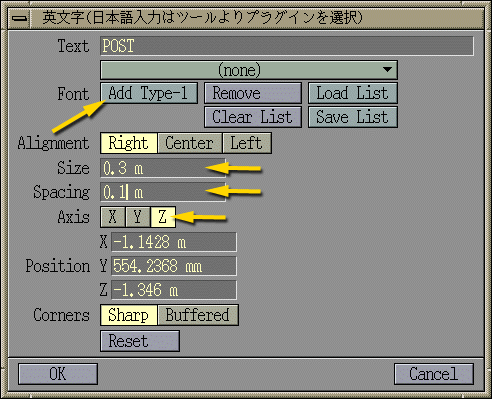
字体のデータは /usr/lightwave/PSfonts というディレクトリの下にあります。 ここではその中の、Bpgraphics というディレクトリに入っている、 calgary-demibold を選んでみます （.afm という拡張子が付いていないファイルを選んでください）。
そのあと、文字のサイズ (Size) や文字間隔 (Spacing)、それに文字の向き (Axis) を決めておいてください。
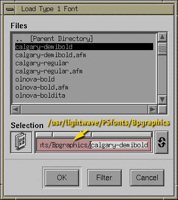
“英文字”のダイアログウィンドウで "OK" をタイプすると、 ３面図上に文字が現われます。 マウスをドラッグして位置を決めてください。 位置が決まったら、“作成”ボタンをクリックするか [Enter] をタイプして、文字を作成してください。
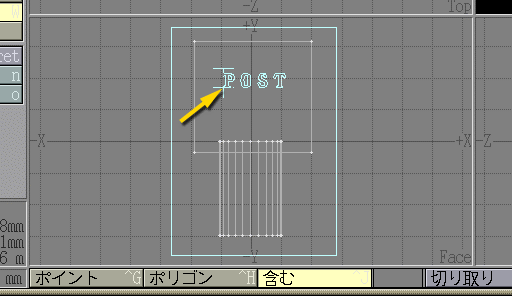
作成した文字の Surface は、先ほど定義した Body になっています。 この文字の色を変更するために、新しい Surface を定義します。 “ポリゴン”のタブを選んで“ボリューム”を“含む”にしたあと、 この文字だけを囲うよう枠を変形します。
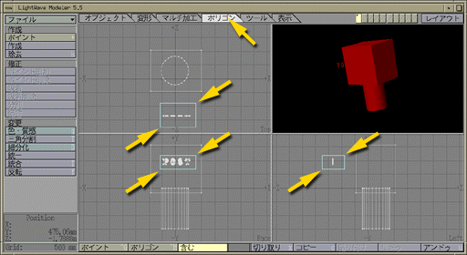
Body の時と同様に、この Surface に与える名前を決めて、 色を選んでください。
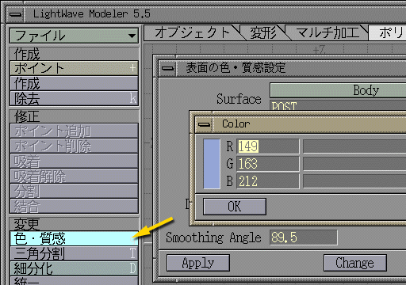
文字の色だけが変わります。この文字には厚みがありませんから、 厚みを付けてみます。
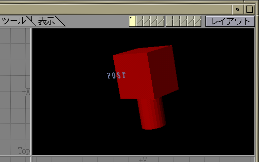
上の“マルチ加工”のタブを選んで、 左の“押し出し”のボタンをクリックしてください。
選択されているポリゴンに厚みを示す“ハンドル”が付きますから、 これをドラッグして厚みを決めてください。 図の文字は正面図の方向を向いていますから、 この作業は上面図あるいは側面図で行う必要があります。
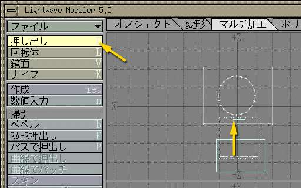
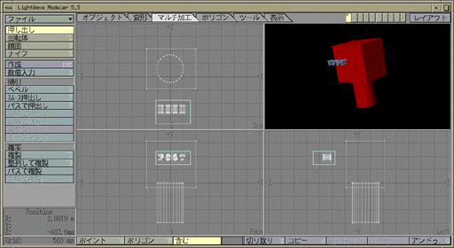
出来上がった文字を、本体から少し出っ張る程度の位置に移動します。 上の“変形”のタブを選んで左の“移動”のボタンをクリックしてください。 マウスのドラッグで現在選択しているものを移動できます。
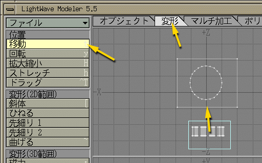
これで、「手紙を入れる口のないポスト」が完成しました。
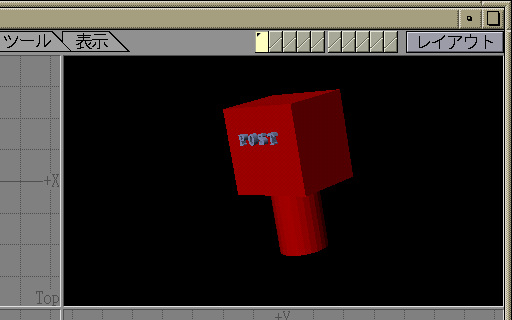
作成したオブジェクト（形状）のデータを保存します。 左上の“ファイル”のボタンをクリックして、 “保存...”のメニューを選んでください。
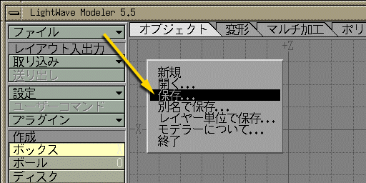
自分のホームディレクトリ (/usr/people/s0450xxx) に移動し （違うディレクトリが表示されているときは、 それを消せば自分のホームディレクトリに戻ります）、 post.lwo のように .lwo という拡張子を付けたファイル名を指定してください。
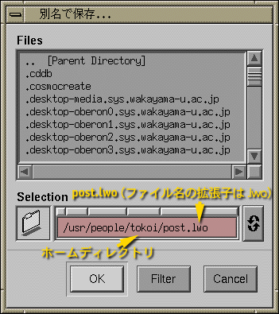
"OK" をクリックして保存が完了したら、 LWM を終了してください。
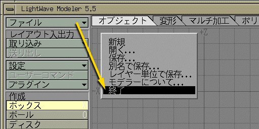
終了前に警告が出ます。"OK" をクリックしてください。
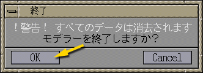
LWM を使う際のポイントについて、 簡単にまとめておきます。
ポストに「投函口」を付けてください。あるいは、 自分で何か好きなものをモデリングしてみてください。